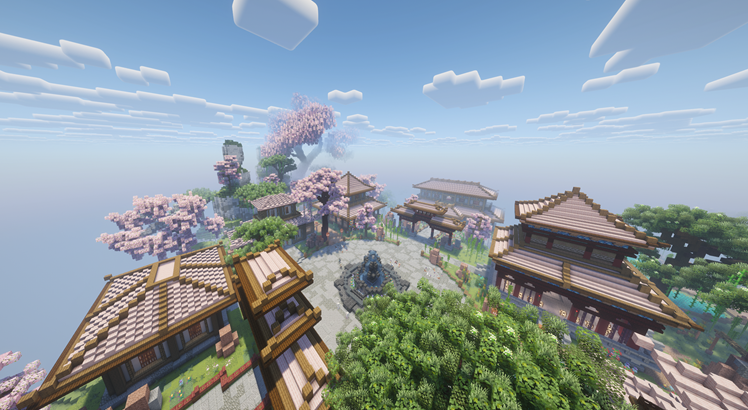
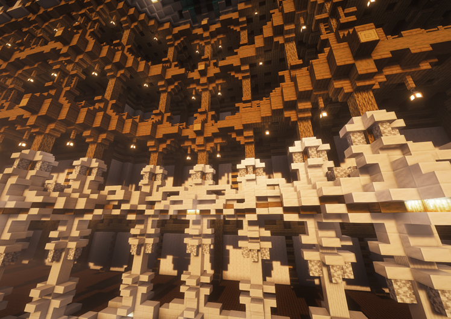

完整預覽所有 Map Art
Preview All Map Art
在購買之前，你可以先瀏覽每一幅畫作的完整樣貌，不需要登入遊戲，也不用四處詢問圖片。網站收錄目前商會販售中的所有 Map Art，讓你能依照自己的喜好慢慢挑選，找到最適合裝飾基地、商店或收藏展示的作品。
你可以在這裡瀏覽目前販售中的所有畫作，查看實際成品，並勾選想購買的作品
網站會自動計算總價格，方便你整理購買清單，再於遊戲內完成交易。
目前已收錄 30+ 幅地圖畫作，後續也會持續新增更多作品。

在購買之前，你可以先瀏覽每一幅畫作的完整樣貌，不需要登入遊戲，也不用四處詢問圖片。網站收錄目前商會販售中的所有 Map Art，讓你能依照自己的喜好慢慢挑選，找到最適合裝飾基地、商店或收藏展示的作品。

Aliquam ut ex ut augue consectetur interdum. Donec hendrerit imperdiet. Mauris eleifend fringilla nullam aenean mi ligula.

Aliquam ut ex ut augue consectetur interdum. Donec hendrerit imperdiet. Mauris eleifend fringilla nullam aenean mi ligula.
Aliquam ut ex ut augue consectetur interdum. Donec amet imperdiet eleifend
fringilla tincidunt. Nullam dui leo Aenean mi ligula, rhoncus ullamcorper.
Augue consectetur sed interdum imperdiet et ipsum. Mauris lorem tincidunt nullam amet leo Aenean ligula consequat consequat.
Augue consectetur sed interdum imperdiet et ipsum. Mauris lorem tincidunt nullam amet leo Aenean ligula consequat consequat.
Augue consectetur sed interdum imperdiet et ipsum. Mauris lorem tincidunt nullam amet leo Aenean ligula consequat consequat.
Augue consectetur sed interdum imperdiet et ipsum. Mauris lorem tincidunt nullam amet leo Aenean ligula consequat consequat.
Augue consectetur sed interdum imperdiet et ipsum. Mauris lorem tincidunt nullam amet leo Aenean ligula consequat consequat.
Augue consectetur sed interdum imperdiet et ipsum. Mauris lorem tincidunt nullam amet leo Aenean ligula consequat consequat.